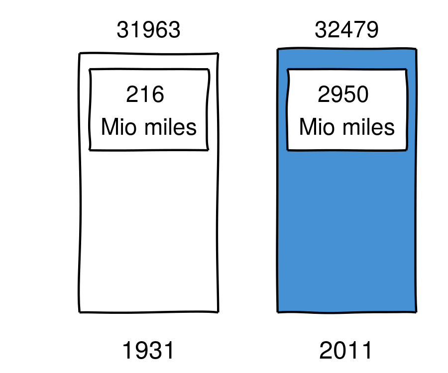
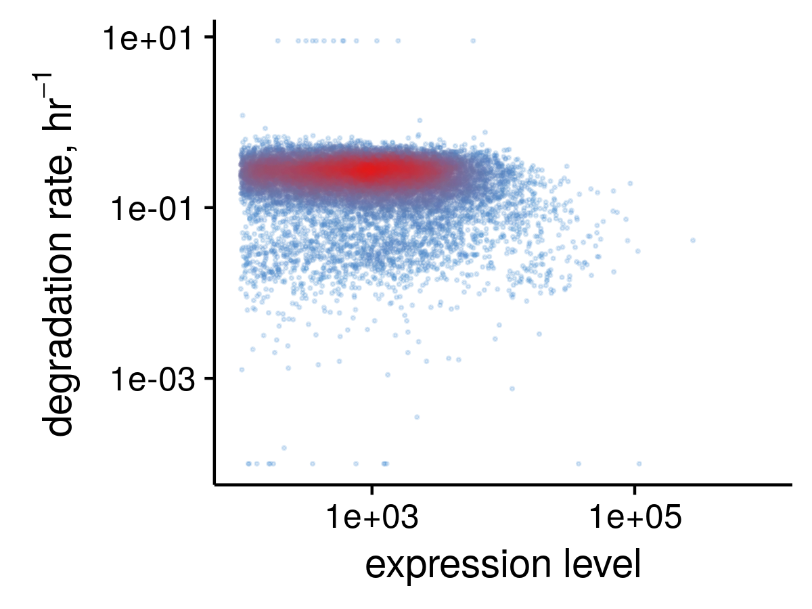

Analysis of RNA dynamics
using
Alexey Uvarovskii, Christoph Dieterich
University Hospital Heidelberg
Do you see a difference?
Number of motor vehicle deaths in the US


What value are you thinking of?
Rates
RNA level is a balance
$\sf \frac{d[\text{RNA}]}{dt} = +$
$\sf [\text{synthesis}] $
$\sf -$
$\sf [\text{degradation }]$
$\sf \cdot [\text{RNA}]$
$$ \sf [\text{steady state RNA}] = \frac{[\text{synthesis}]}{[\text{degradation }]}$$
Nascent RNA can be traced
usual RNA-seq after then
Pulse-chase experiment
a way to measure RNA kinetics
background
- rates are also interesting
- new RNA can be traced
- pulse-chase RNA-seq
Analysis
- Math model
- Stat model
- Normalisation
pulseR to help
Math model
defined by the setup,
e.g. pulse labelling is
$$\sf [\text{total}] = T\equiv\text{const} $$
$$ \sf[\text{pull down}] = T\cdot \left( 1 - e^{-dt}\right) $$
$$\sf t = 0, 1, 2, 4\, \text{hr} $$
Stat model
Count model for count data:
Negative binomial distribution
Fitting by maximum likelihood estimation (MLE)
Normalisation
$$\begin{align}
[\text{total}] &= \,[\text{labelled}] + [\text{unlabelled}] \\
[\text{pull down}] &= ?[\text{labelled}] + ?[\text{unlabelled}]
\end{align}
$$
Normalisation using spike-ins
In pulseR
using spike-ins
by MLE fitting
absolute synthesis rate
no spike-ins needed
EU pulse-chase on H9 cells
pulse (22hr) — chase (0, 4, 8hr)

Uncertain fit

Outline
- circular RNA tools
- pulseR package
The workflow
library(pulseR)
formulas <- MeanFormulas(
total = mu,
lab = mu * (1 - exp(-d * time)),
unlab = mu * exp(-d * time)
)
pd <- PulseData(counts, conditions, formulas, fractions, spikeins)
options <- ...
guess <- ...
fit <- fitModel(pd, guess, options)